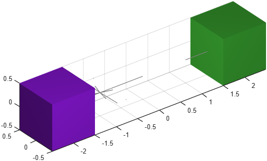

Dipole interaction
Class phx.Dipole | Superclass: phx.base.Object
phx.Dipole assigns a dipole charge to selected bodies. Each body
carries two opposite poles offset from its centre along the dipole Axis;
all poles in the group interact pairwise through an inverse-square reaction force:
c1 * c2
F = A * -----------
r^2
This produces the orientation-dependent attraction and repulsion of magnetic dipoles. The field can be visualized as a vector field on a configurable grid.
d = phx.Dipole(bodies) creates a dipole element and assigns it to
all given bodies, forming a mutually interacting group. Provide one charge per body
(Charge) and the dipole orientation and offset
(Axis).
| Argument | Type | Description |
|---|---|---|
| bodies | phx.Body (1×n) | Bodies forming the interacting group. |
| Property | Type / Default | Description |
|---|---|---|
| Charge | n×1 double | Dipole charge of each body (one per body). |
| Axis | [1 0 0] | Dipole orientation (direction) and pole offset from the centre (magnitude). One row per body. |
| Attractivity | -1 | Polarity: -1 = opposite poles attract, +1 = they repel. |
| VectorFieldCenter | [0 0 0] | Position of the vector-field origin. |
| VectorFieldSize | [10 10 0] | Extent of the vector field, [x y z]. |
| VectorFieldStep | 1 | Spacing of the vector-field grid. |
| VectorSegments | 4 | Number of segments per field-line vector. |
| VectorLength | 1 | Length of each field-line vector. |
| Overlay | false | Draw the vector field as an overlay (always on top). |
| Energy | double (read-only) | Potential energy of the pole pairs, J (dependent). |
clf; view(3); axis equal; grid on; camlight headlight; a = phx.Body("Position", [-2 0 0]); b = phx.Body("Position", [ 2 0 0]); phx.Dipole([a b], "Charge", [1; 1], "Axis", [1 0 0; 1 0 0]); sim = phx.Simulation(gca, "Gravity", [0 0 0]); sim.step(4, 800, 5); delete(sim);
